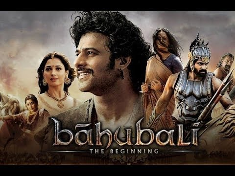

I am from India. I have done my undergraduation in Electronics and Communication Engineering and later started to work in the Software field, I wanted to upskill myself so that it would boost my career opportunities, that is where I have decided to pursue masters in Computer Science.
I like Bahubali because Bahubali is not only about the heroism of man.It also introduced us with strong female characters.Well,female characters are always strong in our culture. But did male as well?Sita was strong enough to walk on fire. But still did Shri Ram done well with her by leaving her in forests?Draupadi was strong enough to marry 5 mens.But did one of them able to protect her pride and respect.Bahubali showed something else to us.Devsena is strong enough to raise her voice for justice.But Bahubali never disappointed her.He always protected her pride and self respect.This was the only story of our culture where men had not disapponted a women. But always be with her in right decisions.
